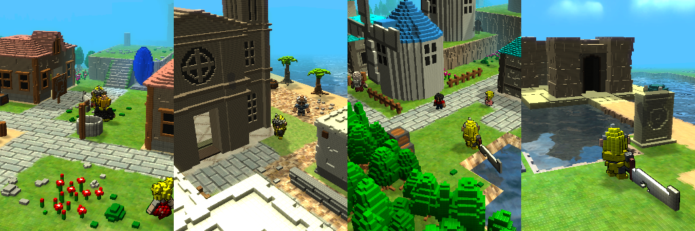

Games¶
Fable of Fairy Stones¶
{kind=link}


If you love The Legend of Zelda and Diablo for the SNES, you’ll love this game. It’s an action RPG with a lot of challenge. A rich story, puzzle solving, and treasure hunting awaits you. You will not get bored and will enjoy the game until the end.
You can play till the end without paying!

This game can be played to the final ending without paying.
The ads you see will give you benefits that make playing even more fun. There are several types of benefits, so take advantage of them according to your own play style.
Drop Chance Increase
Rare Drop Lottery Probability Increase
Gold Drop Increase
A wide variety of monsters stand in front of you.

More than 20 unique boss monsters are waiting for you. Each boss monster has a different weak point, which can be destroyed.Monsters with tails can even have their tails cut off!
An infinite number of equipment types automatically generated!
The types of equipment are weapons, helms, armor, and shields. Weapons include one-handed swords and large swords, each of which requires a different strategy to face the enemy. All equipment is automatically generated through a combination of countless magic effects, and no two weapons will be the same.
An expansive field map and nine dangerous dungeons

There are five villages and nine dungeons in the vast field. In the villages, you can meet various people, gather information, shop, and accept quests. Each dungeon is unique, and it is not enough to just prepare your weapons and armor, you must use items and solve puzzles to advance.
A nostalgic, retro world expressed in cubes
At first glance, the world drawn entirely in cubes looks somewhat nostalgic and retro.However, when you play this game, you will find yourself immersed in the meticulously rendered world before you know it.
A sad and epic story that revolves around Fairy Stones.
The sound of turbulent times is creeping into the peaceful and beautiful land of Middle Earth. Can you find out the cause of this unrest and bring peace back to the land?